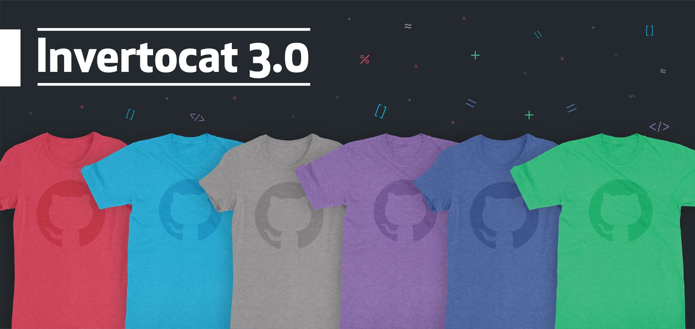

三島合宿での学びをまとめました
三島のDBCLSにて、2019/09/16~22(DBCLSは17~20の4日間)までの1週間、お邪魔させて頂き勉強合宿を行いました。 合宿にて学んだことをGitHubのREADMEに書いていたのですが、せっかくなのでブログみたいなものにきれいに残したいと思いhtmlの勉強もかねて作ってみました。
DBCLSでの4日間+mishima.sykで得た学びのダイジェストです。
学んだことについて、コード的な観点での記録は全て、ScrapBoxに保存しています。 ScrapBoxは無料でUPの制限もなく、コードがきれいに表示できる、ページとページを簡単に使えるので今イチオシでハマっています。
DBCLSにて、坊農さんとのお話の中で得た知識、思ったことなどを書いていきます。 "オフ"だからこそ得られた学びをちりばめてみました。
三島、沼津ではたくさんのおいしいものを食べる機会がありました。食レポほど詳しい感想はありませんが、写真と共におすすめを残しておきたいと思います。
4日間で学んだことの内容です。
・三島に到着 ・AWSに初めて触れる ・atomでREADMEを書き始める（プレビュー機能）
・遺伝研の施設見学 ・metagenome解析（実行） ・Nimに触れる、atomで動かす
・BS-seq解析（実行、解読）終了！ ・発現類似度の計算スクリプト、Pythonverを理解、Pandasで。 ・ikraで40サンプルほどをまわした。iDEPに入れることはできた。 ・IsoformSwitchAnalyzeRのダイジェスト版を実行する ・metagenome、他のサンプルでもQIIME2で解析できないか試してみる（途中）
・metagenome解析（解読） ・ikraをtravis ciに対応させる。 ・IsoformSwitchAnalyzeRを自前のデータでやってみる
・leafcutterの実行 ・travis ciの並列化 ・coverallsをつける ・プレゼン作成
・mishima.syk#14の参加、発表
勉強したことのコードなどを全てScrapboxにまとめました。 このページよりももっと多くの量で書かれています。
〇メタゲノム解析関連 ・メタゲノム解析_勉強 ・メタゲノム解析 ・qimme2 casava emp 〇BS-seq解析関連 ・trim galore 0.5.0の環境作成 ・BS-seq解析 〇ikra関連 ・ikra travisci ・ikra travisci つけてみる ・発現類似度の高速化 nim ・IsoformSwitchAnalyzeR ・IsoformSwitchAnalyzeR ikra test illumina PEでやってみる ・github pages 三島
4日間で学んだことの内容です。
到着。
ホテルのWiFiはルーターを使えば、わりと快適。
富士山きれい！
三島駅の南北連絡通路がない。。。
三島駅の南北通り抜け
Markdownの記法を学ぶ
参考：Git Hubにて使用する簡単なMarkdown記法まとめ
markdown-cheatsheet.md

8:40発のバスで到着。
坊農さんより、いろんな話をお聞きする。
githubの勉強
copyleft･･･公開されたソフトウェアなどについて、利用・再配布・改変の自由を認める思想。
キャラの商品がある

topでhello worldと検索すると、全世界でのたくさんのタイプミスが見つかる。
https://github.com/search?q=hello+world
BS-seqも大きく変わる？
すでにDNA methylationをNanoporeで読む技術はかなり確立。
https://academic.oup.com/nar/article/47/8/e46/5356940
Direct RNA sequencingによるfull length sequenceやm6AなどのRNA modificationも難しいけど可能なよう。
https://www.nature.com/articles/s41467-019-11713-9
RNA-seqも進歩の余地あり。
Python2のmac2はどうなる。。。
ツールの開発は資金面が難しい。。。

今日は初富士山！
メタゲノムも結局メタデータが一番大事。どんな条件でサンプルとったのか。突き詰めたら、その日の気温は、湿度は、等々。細胞の良さ具合とか。
寄生蜂。1個の卵が数個～数千個の胚を生じる。ゲノムはn半数体。
真社会性→真社会性・・・ハチやアリの社会はすごい
シルク×パーキンソン病の論文→Identification of key uric acid synthesis pathway in a unique mutant silkworm Bombyx mori model of Parkinson's disease.
micropython→MicroPython ガイド
PubMedにのるのは、出版されてから3〜4日程度かかる！誰かがやってくれているから。世の中そんなに便利じゃない。
田舎はお店が厳しく自然淘汰される。おいしいお店しか残らない。中立説はない。田舎はその点がよいか。
しいたけキャッチャー
坊農さんより、明日のsykの発表のダイジェストを一足先に聞かせて頂く。
メモ
癌学会も。
メモ

TCGA
沼津港を訪れる。
Mishima.syk#14に参加する。conpass
①KNIME @PK（@t_kahi）
in vitroの創薬
KNIME analytics platform ⇒GUI KNIME Analytics Platform とは？
ケモインフォでよく使われる。
中でRが使える。
random forestとか機械学習も。
cellProfiler(HCSのスタンダート、フリーソフト)を使った、high content analysis(high content screening)
High Content Screening(HCS)とは，何千もの化合物やsiRNAライブラリーを処理した細胞内の生理活性を測定することができる自動顕微鏡スクリーニング技術のこと。
細胞や細胞内のオルガネラ，タンパク質などを複数の蛍光物質で染色をし測定することからhigh contentと呼ばれています．
【HCS】High Content ScreeningとCellProfilerについてより。
ソフトは、condaとかでインストールできても、ライセンスがfreeじゃないときもある。
バイオインフォ系、統合TVもサポートしてた。→Galaxyだけが残った→その後、今はCWL。
② 大川さん(@fmkz___)
③ (@iwatobipen)
Airflow
Luigiではない。
Jupyterでプレゼンができるっぽい→（参考：【Day-5】Jupyterでできる！イケてるプレゼンスライドの作り方
Jupyter Notebookでプレゼンをするとっても便利な方法）
AIrflow＝ワークフローエンジンと言われるツールの一種で、 複数のタスクの実行順序を定義するワークフローの作成、実行のスケジューリング、監視などを行うことができる。（参考：初めて触るAirflow）
Airflowのチュートリアルビデオ→Airflow tutorial 1: Introduction to Apache Airflow
ドキュメント→https://airflow.apache.org/tutorial.html
④ 露崎さん@antiplastics
1細胞オミックス解析の新GSEA手法

NOISeqを高速化した改造版が、metaSeq。metaSeq: RNA-seqデータにおけるメタアナリシス解析パッケージ
LT-角崎太郎さん
CWLについて。
WebからKNIMEを使う話

Web Design
Vero molestiae sed aut natus excepturi. Et tempora numquam. Temporibus iusto quo.Unde dolorem corrupti neque nisi.

Branding
Vero molestiae sed aut natus excepturi. Et tempora numquam. Temporibus iusto quo.Unde dolorem corrupti neque nisi.

Branding
Vero molestiae sed aut natus excepturi. Et tempora numquam. Temporibus iusto quo.Unde dolorem corrupti neque nisi.

Web Development
Vero molestiae sed aut natus excepturi. Et tempora numquam. Temporibus iusto quo.Unde dolorem corrupti neque nisi.

Web Design
Vero molestiae sed aut natus excepturi. Et tempora numquam. Temporibus iusto quo.Unde dolorem corrupti neque nisi.

Branding
Vero molestiae sed aut natus excepturi. Et tempora numquam. Temporibus iusto quo.Unde dolorem corrupti neque nisi.